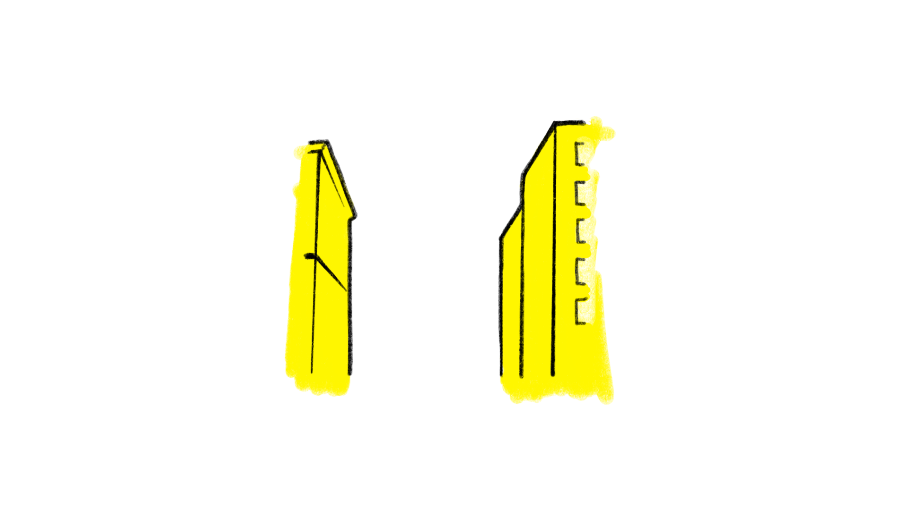
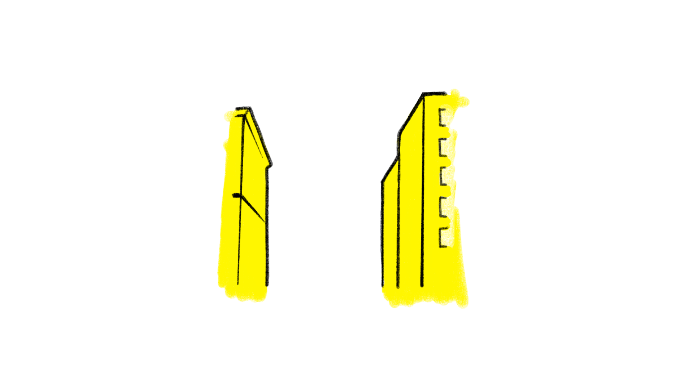

Worms
Introduction
The monsters came from deep underground without much warning! There was a rumble for a few seconds, but you wouldnt have felt it unless you were very close to where one broke through the ground. Some came up beneath skyscrapers, tunneling their way through the core, writhing erratically to the top floors like a salmon swimming upstream. They were wormlike in appearance, but giant, with huge destructive teeth. They could bite though concrete and reinforced steel like a labrador can eat a packet of crisps. If you've never seen a labrador eat a packet of crisps before I would highly recommend locating your nearest lab immediately, but that is of course good advice in general. Anyway, the beasts moved through earth and solid matter like a fish cuts through water, the 'permanent' structures offering little resistance as the monsters crashed through whatever got in their way. People obviously panicked. Of course they did! There were stampedes, crushing, and traffic accidents, so many that the roads became blocked with wrecked vehicles very quickly, and were impossible to get through in a car. The bridges suffered the same fates and became bottlenecks. The monsters seemed to target hotspots like that, like they sensed they could do the most damage, kill the most people.. People huddled in their apartment buildings, as blackouts made everything even more despairing, and fires ravaged the city. If you were lucky enough to be in a building that was not targetted, there was a chance you had some time to make a plan, but there were no obvious answers. What do you do when the city in which you live is assaulted with a coordinated attack by a large contingent of basically supernatural creatures who for all you know are indestructable. They came from the belly of the earth and can chomp through literally anything they want. There may actually be no way to fight these things. So you run. But where? Many tried to get away on the water, but there were too few boats. A fair few brave captains and their crews ventured some daring rescues, but without effective communication it was not as reliable as it should have been. Everyone was so slow to react. It was like the entire country, maybe the world, was in shock. Videos began curculating on social media immediately. The footage was incredible. People were getting close up action footage of giant worms eating new york buildings. More than one person was eaten whole by a worm while recording footage, but it wasnt necessarily because they were taking silly risks to get the video, because people were doing everything they could to get to safety and still found themselves in the belly of the beasts before too long. They seemed to have amazing senses, and were able to hunt somehow. Whether it was movement they sensed, like a t-rex, or they could sniff people out perhaps, it wasnt clear. They were just incredibly good at honing in on people, and they seemed to be motivated to feed. Oh no! They weren't just merely eating people accidentally as they crunched up the city. They were definitely targetting people first, everythign else second. That much was clear from all the video footage coming in. At first there was so much but as the minutes and hours ticked away the survivors were silenced 1 by 1 as they were eaten or their phone batteries began dying or they became so exhausted they simply collapsed. Then there were relatively few videos for the outside world to study and learn from. The military response was heavily criticised in the immediate aftermath of the attack on New York. Jets were scrambled and bombs were dropped in strategic locations around the city. When that wasnt effective pilots were greenlit to engage at will. Many innocent lives were lost thanks to the bungled military assault of that first day. Thankfully nukes were not used, but they were discussed, and we may never know how close the powers that be came to nuking New York City. Instead of nukes they dropped bombs and fired missiles. Once that didnt work they tried different shelling tactics but ultimately realised it was folly. The worms were not being killed without direct hits, and direct hits were nearly impossible. The worms were often underground, or covered by rubble, effectively shielding them. Not only that but they were already stronger than anything that had been seen before. Without a dead body to study there was no way to know strong they were, but more than one pilot reported multiple hits and the worms didn't seem to be much affected at all. It took far too long to come to the conclusion that bombing the worms, and consequently the innocent new yorkers caught up in the conflict, was a waste of time and resources. It wasn't effectively killing anything except friendlies, and New York was burning to the ground. New Yorkers are a special breed. Maybe it's the inhumane conditions they subject themselves to daily that makes them so resilient. The harsh unfeeling city that never sleeps, always watching them, keeping them on their toes. The city that doesn't care about you, and will roll over you and leave you for dead if you dont get up and get moving. It makes them hard. The city of stress makes for a sobering comparison to sleepy upstate New York, where worms were not currently eating the ground from beneath your feet. Where people had space, and gardens, garages! They had cars, something many New Yorkers cannot afford or justify, not that it would have come in much use at this present moment. The roads were still blocked, worse than ever, with broken buildings and wreckages, and bodies. The carnage was everywhere but it wasn't always immediately obvious. You could be stumbling through the rubble and suddenly a smear of human, some fingers, maybe some brain matter, would enter your vision. It was not something you got used to. People would become trapped between walls and floors as worms charged through their apartment building. Their bodies woudl be churned with the concrete, the steel and iron, the wood, the glass.. The ones who were eaten were unlucky, but the ones who were caught in the creatures wake were caught in a blender of death, a tornado of boulders that slammed and crushed and cut whoever was caught up in it. And there was no escape once you were that close. You couldnt run, not really. The worm would crash through the wall, or the floor, or close enough to explode the room you were in.. or it wouldn't. You held your breath and you prayed to whichever gods were listening that it passed by and you survived. Of course the worms had to take a break eventually, didn't they? They must get tired, everything gets tired, especially after a big meal. And these worms must be reaching their limit, with thousands upon thousands dead and millions injured, and the worms werent just eating people, they were munching up literally everything. Their stomachs were a landfill of recently-standing, largely occupied residential and commercial buildings. But they did stop, nearly 24 hours after they had suddenly attacked, and after the most terrifying night of some peoples lives, the worms went dormant. They retreated underground as the city burned to the ground. And flooded in parts. New York was shaken to it's core, without any leadership or direction, the city just bled out for the whole world to see. In less than a day the worms had laid waste to the greatest city on earth. Worms?! Those who were lucky enough to have survived the inital attack were left to ponder the events, and each and every one of them had to come to terms with losing their loved ones, their friends and colleagues, to worms. Giant worms for sure, but worms nonetheless. And nothing could be more frightening than worms now. Unstoppable machines of death. They moved so fast you couldnt outrun one. There was nowhere you could go, unless you had a helicopter or a boat, and making a swim for it wasnt exactly safe, in fact worms were seen diving into the water to swallow crowds of people trying to escape. Like whales on a nature documentary, internet trolls would go on to overlay david attenborough talking about whales feeding with footage captured of one of these kinds of worm attacks.